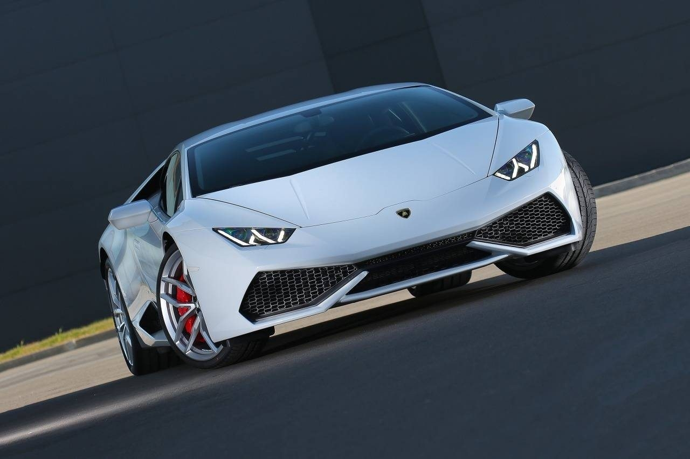

Born of a desire to build the world's best grand touring automobiles, Italian industrialist Ferruccio Lamborghini founded his automotive company in 1963. Beginning with the V12-powered 350 GT, that low-volume model evolved into the more practical (and powerful) 400 GT 2+2. It wasn't, however, until the introduction of the mid-engined Miura that Lamborghini fully landed on the automotive map, blowing more minds - at the time - than pop psychologist Timothy Leary. The Miura was followed by the equally daring Countach, which was succeeded by the Diablo and Murcielago. And while Lamborghini had occasionally returned to its front-engined roots, its identity is firmly established with the mid-engined format. With numerous ownership changes over the last forty years, Lamborghini would seem to have found a permanent home within the corporate umbrella of Volkswagen's Audi. With but two models, well short of what is offered by Ferrari, Bentley or Aston Martin, Lamborghini would seem to be at a competitive disadvantage. But both the 'entry level' Huracan and V12-powered Aventador have passionate followings, and in the exotic market passion begets profit. The V10-equipped Huracan is the brand's most affordable, popular and - given its tossability - most fun to drive. The Aventador, with a suggested retail of roughly $400,000, is the company's most expensive production model.
